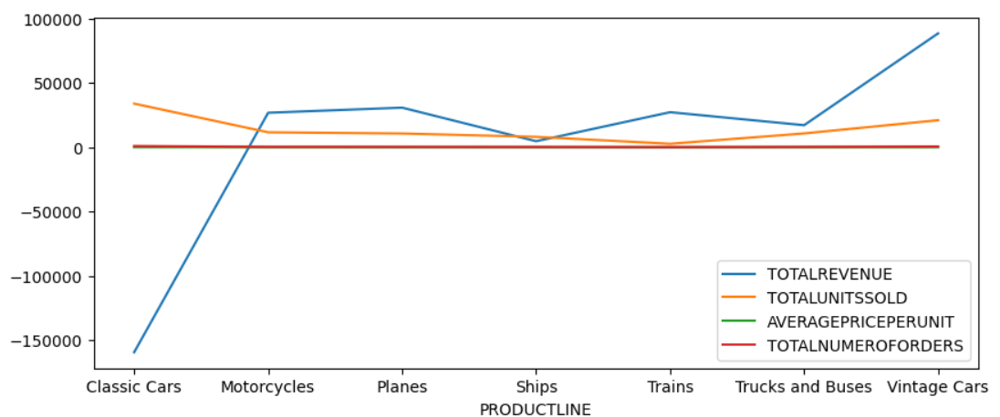

Report
Here you can find the Jupyter Notebook file
Answer to the first question
Data Preprocessing
Missing values
There are a lots of records with null values in this data, also they appeared together.
Unreadable columns name
Answer to the second question
The following results are for each product:
-
Total revenue generated:
| Classic Cars |
Motorcycle |
Planes |
Ships |
Trains |
Trucks and Buses |
Vintage Cars |
| -159572.67 |
26874.83 |
30849.57 |
4705.76 |
27308.57 |
17184.39 |
88671.63 |
-
Total usits sold:
| Classic Cars |
Motorcycle |
Planes |
Ships |
Trains |
Trucks and Buses |
Vintage Cars |
| 33992 |
11663 |
10727 |
8127 |
2712 |
10777 |
21069 |
-
Average price per unit:
| Classic Cars |
Motorcycle |
Planes |
Ships |
Trains |
Trucks and Buses |
Vintage Cars |
| 120.152301 |
97.673669 |
88.755011 |
86.047004 |
72.656342 |
103.033126 |
86.152451 |
-
Total number of orders
| Classic Cars |
Motorcycle |
Planes |
Ships |
Trains |
Trucks and Buses |
Vintage Cars |
| 967 |
331 |
306 |
234 |
77 |
301 |
607 |

From the following graph we can see that the highest revenue came from selling the vintage cars so the company should focus on selling vintage cars.
Answer to the third question
The following results are for each month:
-
Total revenue generated:
| 1 |
2 |
3 |
4 |
5 |
6 |
7 |
8 |
9 |
10 |
11 |
12 |
| -10908.92 |
9545.90 |
9193.67 |
-4129.00 |
3031.06 |
-2278.12 |
4593.97 |
-5887.43 |
9193.27 |
20783.71 |
878.85 |
2005.12 |
-
Total units sold:
| 1 |
2 |
3 |
4 |
5 |
6 |
7 |
8 |
9 |
10 |
11 |
12 |
| 7997 |
7903 |
7585 |
6704 |
8992 |
4620 |
4899 |
6538 |
5681 |
10998 |
20857 |
6293 |
-
Average price per unit:
| 1 |
2 |
3 |
4 |
5 |
6 |
7 |
8 |
9 |
10 |
11 |
12 |
| 99.625234 |
101.340757 |
98.164799 |
100.388872 |
102.241993 |
99.394156 |
104.160441 |
101.743347 |
101.308044 |
100.297963 |
101.492688 |
100.536151 |

We can see from the following graph that the highest revenue is between the 9th and 11th months
but if we look at the period between the second and the third months we can see that the relationship between
the TOTALREVENUE and TOTALUNITSSOLD is correlated, so the company should focus on selling more between the second month and the third month.
Answer to the fourth question
-
Top 5 selling cities:
| Madrid |
San Rafael |
NYC |
Singapore |
Paris |
| 258 |
178 |
138 |
138 |
70 |
The other cities should focus more on selling vintage cars between the second month and the third month.